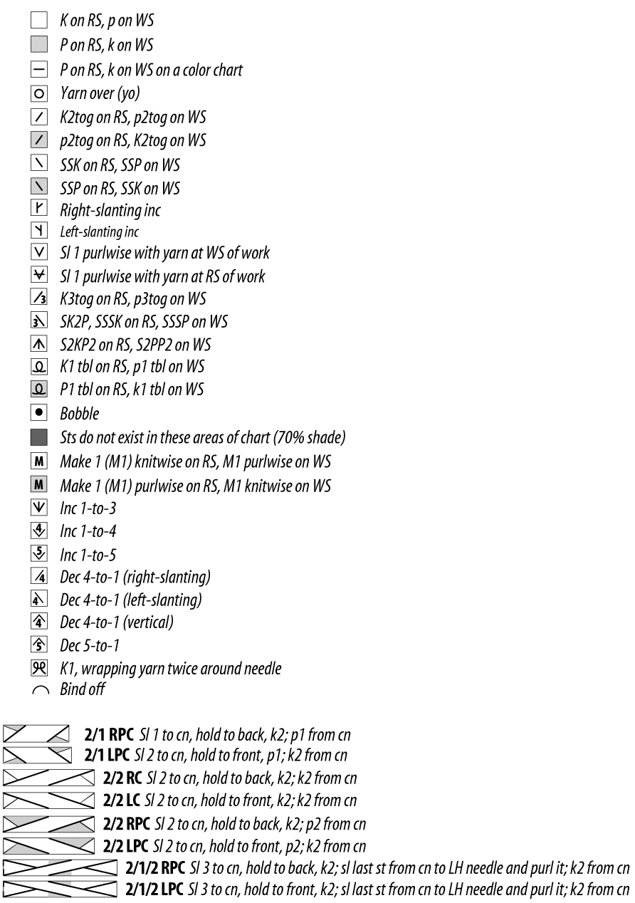

Knitting Instructions
Knitting comes with wide range of commonly used symbols, that you need to understand.
Here you can find all the knitting symbol explanations that you might need for your projects while reading pattern and chart instructions. If you are not familiar with the abbreviations - please refer to the second table below.
Knitting symbol chart
Abbreviation chart
K - knit;
P - purl;
RS - right side;
WS - wrong side;
YO - yarn over
K2tog - knit two together
P2tog - purl two together
SSK - slip a stitch, slip a stitch and knit
SSP - slip a stitch, slip a stitch and purl
Sl - slip a stitch
SK2P - slip one stitch, knit two stitches together, pass the slipped stitch over the 2 stitches that were knit together
SSSK - slip, slip, slip, knit three slipped stitches together
SSSP - slip, slip, slip, purl three slipped stitches together
S2KP2 - slip two stitches together, knit one, pass two slipped stitches over
S2PP2 - slip two, purl one, pass slipped stiches over
Tbl - through back loop
Bobble - knit in the front loop, back loop, front, back, front loop of the same stitch
M1 - make one stitch, pick up the bar between the stitches from front to back, knit this bar through the back loop
M1R - make one right, pick up the bar between the stitches from the back and knit it through the front loop
Inc 1-to-3 - increase one stitch into three stitches, knit front of the stitch, then back, front again
Inc 1-to-4 - increase one stitch into four stitches, knit front of the stitch, then back, front and back again
Inc 1-to-5 - increase one stitch into five stitches, knit front of the stitch, then back, front, back and front again
Dec 4-to-1 - knit the stitches you need to decrease, pass them back to your left needle. Take the second stitch and pass it over the first one, then take the next one and pass it again over the first one and same with the last. Pass the remaining stitch to your right needle.
RPC - right purl cross, slip two stitches to cable needle and hold in back, knit two, then purl two from cable needle
LPC - left purl cross, slip two stitches to cable needle and hold in front, purl two, then knit two from cable needle
RC - right cross, Slip two stitches to cable needle and hold in back, knit two, then knit two from cable needle
LC - left cross, Slip two stitches to cable needle and hold in front, knit two, then knit two from cable needle
Sel s - selvage stitches, side stitches, the very first knitting stitch and the very last stitch of the piece.
Argyle Diamond stitch
Cast on 48 stitches.
Row 1: P2, k1-tbl, p1, k4, p1, k1-tbl, P2, k2, p8, 2/2LC, p8, k2, p2, k1-tbl, p1, k4, p1, k1-tbl, p2.
All even number rows: P1-tbl over k1-tbl from previous row, knit the knit stitches and purl the purl stitches
Row 3: P2, k1-tbl, p1, 2/2RC, p1, k1-tbl, P2, 2//2LPC, p4, 2/2RPC, 2/2LPC, p4, 2/2RPC, p2, k1-tbl, p1, 2/2LC, p1, k1-tbl, p2.
Row 5: P2, k1-tbl, p1, k4, p1, k1-tbl, P4, 2/2LPC, 2/2RPC, p4, 2/2LPC, 2/2RPC, p4, k1-tbl, p1, k4, p1, k1-tbl, p2.
Row 7: P2, k1-tbl, p1, 2/2RC, p1, k1-tbl, P6, 2/2LC, p8, 2/2RC, p6, k1-tbl, p1, 2/2LC, p1, k1-tbl, p2.
Row 9: P2, k1-tbl, p1, k4, p1, k1-tbl, P4, 2/2RPC, 2/2LPC, p4, 2/2RPC, 2/2LPC, p4, k1-tbl, p1, k4, p1, k1-tbl, p2.
Row 11: P2, k1-tbl, p1, 2/2RC, p1, k1-tbl, P2, 2/2RPC, p4, 2/2LPC, 2/2RPC, p4, 2/2LPC, p2, k1-tbl, p1, 2/2LC, p1, k1-tbl, p2.
Row 13: P2, k1-tbl, p1, k4, p1, k1-tbl, 2/2RPC, p8, 2/2LC, p8, 2/2LPC, k1-tbl, p1, k4, p1, k1-tbl, p2.
Row 15: P2, k1-tbl, p1, 2/2RC, p1, k1-tbl, k2, p10, k4, p10, k2, k1-tbl, p1, 2/2LC, p1, k1-tbl, p2.
Row 17: P2, k1-tbl, p1, k4, p1, k1-tbl, 2/2LPC, p8, 2/2LC, p8, 2/2RPC, k1-tbl, p1, k4, p1, k1-tbl, p2.
Row 19: P2, k1-tbl, p1, 2/2RC, p1, k1-tbl, P2, 2//2LPC, p4, 2/2RPC, 2/2LPC, p4, 2/2RPC, p2, k1-tbl, p1, 2/2LC, p1, k1-tbl, p2.
Row 21: P2, k1-tbl, p1, k4, p1, k1-tbl, P4, 2/2LPC, 2/2RPC, p4, 2/2LPC, 2/2RPC, p4, k1-tbl, p1, k4, p1, k1-tbl, p2.
Row 23: P2, k1-tbl, p1, 2/2RC, p1, k1-tbl, P6, 2/2RC, p8, 2/2LC, p6, k1-tbl, p1, 2/2LC, p1, k1-tbl, p2.
Row 25: P2, k1-tbl, p1, k4, p1, k1-tbl, P4, 2/2RPC, 2/2LPC, p4, 2/2RPC, 2/2LPC, p4, k1-tbl, p1, k4, p1, k1-tbl, p2.
Row 27: P2, k1-tbl, p1, 2/2RC, p1, k1-tbl, P2, 2/2RPC, p4, 2/2LPC, 2/2RPC, p4, 2/2LPC, p2, k1-tbl, p1, 2/2LC, p1, k1-tbl, p2.
Repeat Rows 1- 28, ending on a Row 1.
Cable stitch
Cast on 33 stitches.
Row 1 P5, K9, P5, K9, P5.
Row 2 K5, P9, K5, P9, K5.
Row 3 P5, C6F, K3, P5, K3, C6B, P5.
Row 4 K5, P9, K5, P9, K5.
Row 5 P5, K9, P5, K9, P5.
Row 6 K5, P9, K5, P9, K5.
Row 7 P5, K3, C6B, P5, C6F, K3, P5.
Row 8 K5, P9, K5, P9, K5.
Repeat these 8 rows to desired length.
Cable Stitch wide
Worked over 10 stitches on a Reverse stockinette background.
Row 1 (RS): K10
Row 2: P10
Row 3: Cross 10 Front
Row 4, 6, 8, 10: P10
Row 5, 7, 9: K10
Repeat rows 1 – 10 until you have reached your desired length.
Ribbed Knit Stitch
Cast on a multiple of 5 sts plus 2 extra stitches, plus 2 selvage stitches.
Row1 (RS): sel s, *p2, k3 repeat from *, p2, sel s
Row 2: sel s, k2, * p3, k2 – repeat *, sel s.
Row 3 (RS): repeat Row 1.
Row 4: repeat Row 2.
Row5 (RS): sel s, *p2, ft– repeat from * p2, sel s.
Row 6: sel s, k2, * slip long loop holding yarn in front, p3, slip long loop holding yarn in front, k2– repeat *, sel s.
Row 7 (RS): sel s, *p2, skpo, k1, k2tog – repeat from *, p2, sel s.
Row 8: sel s, k2, * p3, k2 – repeat *, sel s.
Repeat Rows 5-8 to form a pattern. No need to repeat anymore Rows 1-4.
Seed Stitch
This pattern is worked across an odd number of stitches.
Row 1 (Wrong Side): K all sts.
Row 2 (Right Side): [K1, k1b] repeat across to last st, k1.
Row 3: K all sts.
Row 4: [K1b, k1] repeat across to last st, k1b.
Repeat Row 1-4
Wavy Lace Stitch
Cast on multiples of 13 plus two edge stitches.
Row 1 to 4: K all.
Row 5: P all.
Row 6: K all.
Row 7, 9, 11: *K2tog two times, P1,YO,P1,YO,P1,YO,P1,YO,P1, K2tog two times - repeat * to the end.
Row 8, 10, 12: K all.
Row 13: P all.
Row 14: K all.
Repeat rows 1 to 14 to a desigred length.